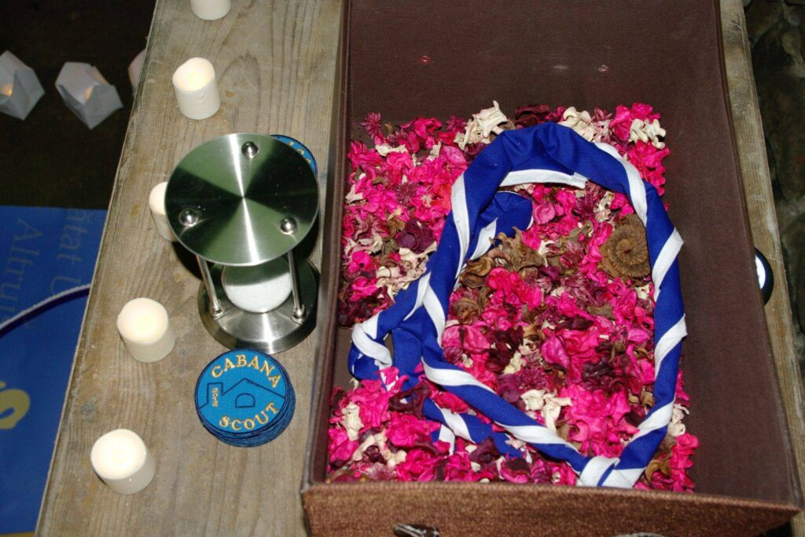

Aprilie 2014 – Aprilie 2015. Un an de Cabana Scout!

Pentru că încă n-a trecut mult timp de când am început să ne lăudăm că s-a împlinit un an de Cabana Scout, am provocat două dintre exploratoarele noastre să scrie câteva cuvinte despre acest moment aniversar. Ca urmare, am primit de la Valentina şi Maria următoarele materiale:
Primul an al Cabanei Scout
Un an de cand am avut ocazia unui nou inceput. Un an de cand s-a nascut in noi dorinta de a construi ceva nou si de a lasa lumea mai buna decat am gasit-o. Un an petrecut impreuna, an cu peripetii si bucurii, poate si esecuri, dar daca am invatat din ele putem sa le numim intamplari care au ajutat la dezvoltatea noastra – ca oameni, ca cercetasi, dar si ca grup de initiativa.
Ca orice alt inceput, dureaza pana gasesti modalitatea de a face lucrurile sa mearga, apoi totul vine de la sine. Greseli, bucurii, dificultati, reusite, plecarea unora, venirea altora – toate le-am experimentat trecand prin ele ca un grup. Incetul cu incetul incepem sa ne formam caracterele, avandu-i ca sprijin pe lideri, invatam sa fim curajosi, economi, utili, loiali, astfel reusind sa ne bazam unii pe ceilalti – devenind o mica familie, dar si devenind mai increzatori in noi insine.
Cand ma gandesc la cercetasi, printre primele lucruri care imi vin in gand este muntele – aventura si bucurie, locul in care devenim oameni mai buni. Nu cred ca am vazut vreun cercetas trist cand a reusit sa ajunga in varful muntelui, chiar si dupa urcusul anevoios si strigarile de ‘nu mai pot’ sau ‘mai facem o pauza?’ . Noi in acest an am avut parte de multe momente de acest fel, reusite si bucurii, in cele doua campuri si trei hikeuri.
Aventura, buna dispozitie, ajutor reciproc, incercarea de a lasa lumea putin mai buna decat am gasit-o si de a face o fapta buna in fiecare zi – acestea sunt lucruri pe care ne bazam la Cabana Scout. Lucruri care ne fac mandri, dorindu-ne ca istoria Cabanei sa nu se termine aici.
Valentina Petre
***
Ma numesc Cabana Scout si m-am nascut in data de 12 aprilie 2014. Am fost un copil deosebit de la inceput . In loc de 2 parinti, eu ma laud cu 5: Louise, Monica, Bogdan, Petre si Adrian. Toti din jur ii numesc lideri. Odata cu mine cresc cei 30 de tineri cercetasi adaugand ani vietii lor, dar mai ales imbogatind-o cu experiente ce le vor fi utile in viata.
Sa va povestesc ce au facut acesti cercetasi in acest prim an al meu: Totul a inceput cu „Promit!”. In cadrul incarcat de istorie de la Curtea Veche, 16 tineri aspiranti au intrat in lumea cercetasiei unindu-si promisiunile cu cele mai vechi si pornind pe acest drum cu incredere, speranta si dorinta de a face lumea mai buna. Au parcurs peste 120 de km pe jos si au petrecut 25 de nopti departe de casa. In fiecare anotimp au plecat in ceea ce se numeste camp, ocazia cu care bat tara in lung si lat: spre Marea Neagra, Ramnicu Valcea, Vaideeni, Polovragi , Lepsa, Piatra Mare si Piatra Craiului, locuri in care si-au mai intins si corturile. S-au imbogatit cu frumusetea de necontestat a peisajelor, au trecut prin incercari si situatii prin care toti si-au descoperit calitati, defecte si abilitati de care nu aveau habar. In felul acesta s-au dezvoltat atat individual dar si ca grup. Au invatat sa faca gulgute la Festivalul Luminii, au dobandit noi cunostinte la Cupa Izvoarelor si au plantat copaci in parcul Tineretului.
Acest grup se intalneste saptamanal la Casa de Cultura Friedrich Schiller si descopera cat mai multe laturi ale cercetasiei, incercand sa faca lumea un loc mai bun si mai frumos. In aceste intalniri se analizeaza trecutul, se traieste maxim prezentul si se priveste cu optimism spre viitor. Se fac planuri de campuri si hike-uri si se asteapta cu nerabdare evenimentele nationale si internationale.
Usa mea e mereu deschisa tututor care indraznesc sa traiesca conform principiilor cercetasesti. Cel mai important lucru pe care l-am invatat de la cercetasi , e sa fiu „GATA ORICAND!”
Va voi povesti la fiecare aniversare cate ceva despre mine, cel putin pana la centenar…
Maria Lungu